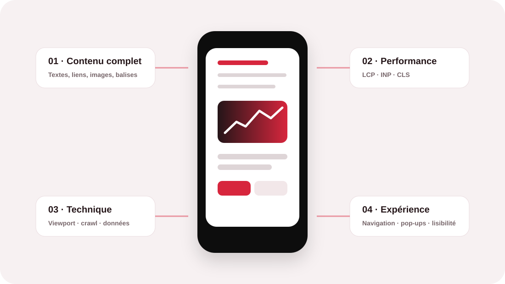
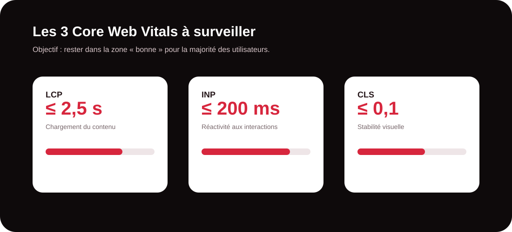

Le mobile est désormais le point de départ du référencement
Le 31 octobre 2023, Google a annoncé que sa transition vers l’indexation orientée mobile était terminée. En pratique, Google utilise la version mobile d’un site, explorée avec son robot smartphone, pour l’indexation et le classement. La recommandation essentielle est donc simple : la version mobile doit contenir tout ce qui compte réellement pour votre visibilité, textes, liens, images, titres, données structurées et éléments de navigation.
Il ne s’agit pas uniquement de réduire une page desktop pour la faire entrer dans un écran de téléphone. Il faut penser le parcours mobile comme une expérience complète, capable de répondre à l’intention de recherche tout en restant techniquement accessible aux robots.
Votre site est-il réellement prêt pour le mobile ?
Un audit SEO mobile permet d’identifier rapidement les contenus manquants, les problèmes de vitesse, les obstacles au crawl et les irritants qui pénalisent l’expérience.
Demander un audit SEO mobileConservez sur smartphone toute la matière utile au référencement
La première erreur consiste à alléger excessivement la version mobile. Pour gagner de la place, certaines entreprises masquent des paragraphes, suppriment des liens ou remplacent des informations importantes par des interactions que l’utilisateur doit déclencher. Or Google recommande que le contenu principal de la version mobile reste équivalent à celui de la version desktop.
- Gardez les titres et sous-titres qui structurent le sujet et permettent de comprendre rapidement la page.
- Conservez les textes essentiels, les preuves, les informations commerciales et les réponses aux questions des utilisateurs.
- Maintenez les liens internes utiles au parcours et à la découverte des pages stratégiques.
- Optimisez les images avec des formats adaptés, des dimensions raisonnables et des attributs alt descriptifs.
- Reproduisez les données structurées pertinentes sur la version mobile lorsqu’elles sont utilisées sur la page.
Faites du responsive design votre base technique
Pour la majorité des projets, le responsive design est la solution la plus simple à maintenir : une même URL et un même contenu s’adaptent aux différentes tailles d’écran. Cette configuration réduit les risques de divergence entre versions et facilite le suivi SEO.
Sur mobile, vérifiez notamment la balise viewport, la largeur des éléments, les tailles de police, l’espacement des boutons et la facilité de navigation au doigt. Une page techniquement responsive mais pénible à parcourir reste une mauvaise expérience.

Traitez la vitesse comme un enjeu SEO et business
Une page mobile lente augmente la friction avant même que l’utilisateur puisse lire votre proposition. Les Core Web Vitals fournissent trois repères centrés sur l’expérience réelle : LCP pour le chargement, INP pour la réactivité et CLS pour la stabilité visuelle.
Pour progresser, commencez par les éléments qui pèsent réellement sur le chargement : images trop lourdes, JavaScript inutile, CSS bloquants, polices mal chargées, scripts tiers ou serveur lent. L’objectif n’est pas de rechercher un score parfait à tout prix, mais d’améliorer l’expérience mesurée auprès des utilisateurs.

Simplifiez le parcours sans appauvrir la page
Sur un petit écran, chaque étape supplémentaire coûte de l’attention. Le menu doit être compréhensible, les boutons suffisamment grands et les informations importantes accessibles sans zoom. Les coordonnées, les formulaires et les appels à l’action doivent être faciles à utiliser avec le doigt.
Évitez également les éléments qui masquent immédiatement le contenu : une fenêtre publicitaire, une inscription obligatoire ou un pop-up trop imposant peut dégrader fortement l’expérience. Une bannière discrète ou un module placé après le contenu principal est généralement plus respectueux du parcours.
Ne laissez pas les détails techniques bloquer Googlebot
Un site mobile peut être visuellement réussi et pourtant difficile à explorer. Contrôlez les règles robots.txt, les balises robots, les ressources CSS et JavaScript, les images et les mécanismes de chargement différé. Le contenu principal ne doit pas dépendre d’un clic, d’un swipe ou d’une interaction que Googlebot ne déclenchera pas.
Vérifiez aussi les balises title et meta description, les URL canoniques, le maillage interne et les données structurées. Si votre site utilise une configuration distincte pour mobile et desktop, la comparaison doit être particulièrement rigoureuse.
Pensez SEO mobile, mais aussi conversion mobile
| Zone à contrôler | Risque fréquent | Bonne pratique |
|---|---|---|
| Contenu | Version mobile trop courte | Conserver le contenu principal, les preuves et les liens utiles |
| Images | Fichiers lourds ou alt génériques | Formats optimisés, dimensions adaptées et descriptions pertinentes |
| Navigation | Menu complexe ou éléments trop petits | Parcours court, boutons tactiles et hiérarchie claire |
| Performance | Scripts, images ou polices trop lourds | Prioriser le contenu visible et supprimer les ressources inutiles |
| Conversion | Formulaire difficile à remplir | Champs limités, CTA visibles et téléphone/e-mail cliquables |
Cette logique est importante pour le SEO comme pour le business. Une bonne position ne suffit pas si la personne qui arrive depuis son smartphone ne comprend pas votre offre, ne trouve pas l’information ou abandonne avant de vous contacter. Le référencement mobile doit donc relier visibilité, expérience et conversion.
Vous voulez savoir ce qui freine votre visibilité mobile ?
MinoSeo peut analyser la structure de vos pages, la parité du contenu, la performance et les principaux obstacles techniques afin de définir des priorités concrètes.
Parler à un expert SEOLa checklist de MinoSeo avant mise en ligne
- Tester les principales pages sur plusieurs tailles d’écran et appareils.
- Comparer le contenu mobile et desktop : titres, textes, liens, images et éléments structurés.
- Mesurer les Core Web Vitals et identifier les ressources qui ralentissent le rendu.
- Contrôler l’indexabilité : robots, ressources, liens et contenu rendu.
- Vérifier les titres, descriptions, canonicals, données structurées et attributs alt.
- Tester les menus, formulaires et CTA avec une navigation au doigt.
- Éliminer les pop-ups ou interstitiels qui masquent inutilement le contenu.
- Suivre les performances après publication dans Search Console et les outils d’analyse.
La méthode MinoSeo pour un SEO mobile durable
Chez MinoSeo, agence SEO/GEO depuis plus de 15 ans, nous abordons le référencement mobile comme un sujet transversal. L’objectif n’est pas de corriger quelques détails isolés, mais de faire converger technique, contenu, expérience et visibilité.
Nous commençons par identifier les pages prioritaires et les principaux freins. Nous vérifions ensuite la qualité du contenu mobile, la performance, le crawl, le maillage et les éléments indispensables à la compréhension de la page. Les recommandations sont enfin hiérarchisées selon leur impact potentiel et vos contraintes.
Un site mobile performant est un actif SEO durable
Le mobile-first n’est plus une tendance à anticiper : c’est le cadre dans lequel Google explore et indexe le web. Un site réellement optimisé doit donc être complet, rapide, lisible, accessible et utile depuis un smartphone. Cette exigence bénéficie à la fois aux moteurs, aux utilisateurs et aux conversions.
En travaillant la version mobile comme une version pleinement stratégique de votre site, vous réduisez les risques techniques, améliorez l’expérience et donnez à vos contenus de meilleures conditions pour être compris par Google et, plus largement, par les environnements de recherche qui privilégient des informations claires et fiables.
Prêt à renforcer votre visibilité sur mobile ?
MinoSeo vous accompagne avec une approche SEO/GEO claire, technique et orientée résultats.
Demander votre audit